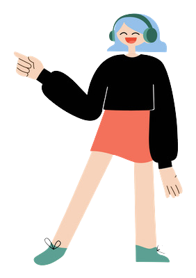
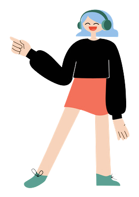

Swimming:I have been swimming for about a year. I learned to swim from scratch. I did not receive awards for my swimming because I did not have such a high speed as my friends with whom I went swimming, but at the moment I can swim in all possible styles
Playing guitar:Learning kettlebells on the guitar is more complicated than swimming. I started to study the guitar after the new year, however, I decided to postpone the study of guitar to the future. Since I can still play a couple of songs and start chords
Combat Sambo:Studying martial arts was my favorite. And I did this most of all. Approximately 2 years. He studied different fighting styles and generally wanted to become a professional athlete. But due to the deterioration in academic performance, I had to give up this sport.
and my last hobby that I still do is street workout. Just physical activity like pull-ups on the horizontal bar or push-ups on the uneven bars. I do this in my free time from study. You can say when I tense my body, I rest my head

.png)
.png) 
